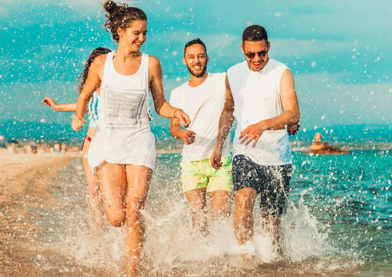

Если у вашего ребенка аллергия или есть необходимость принимать лекарства по рекомендации врача, об этом обязательно должны знать вожатые. Все лекарственные средства должны быть переданы вожатому для передачи педиатру. Хранение лекарственных препаратов детьми категорически воспрещено. Предупредите ребенка, что в случае недомоганий очень важно сразу обращаться к вожатым. Они рядом и быстро окажут помощь. Звонить и разыскивать вас в этом случае бессмысленно, т.к. Вы находитесь далеко и не сможете быстро помочь. При любом недомогании мы обращаемся к врачу, который согласовывает с родителями все назначаемые препараты и процедуры.Утаивать информацию об аллергиях (особенно на бассейн и укусы насекомых), склонностях к простуде и прочих “сугубо личных” особенностях здоровья ребенка. Отдельно, в особом секрете, хранить факт наблюдения у психолога и других болезнях, находящихся в стадии обострения.Давать с собой лекарства “на всякий случай”, или вдруг у кого из друзей что заболит – можно же поделиться, и неважно, что безобидных лекарств нет.Отправлять в лагерь не долеченного или больного ребенка «вот и полечится в лагере, а то, что заразит кого, так может пронесет».Требовать ежечасной проверки здоровья ребенка («а вдруг заболеет»), устраивать скандалы вожатым, если они этого не делают.
Постарайтесь обговорить все бытовые моменты: сколько одежды нужно взять, почему важно питаться разнообразно (а не только макаронами и печеньями), правила поведения в бассейне (душ до похода в бассейн, душ после, мокрую одежду ополаскиваем и сразу вешаем сушиться). В идеале пометьте бирками/ перманентным маркером всю одежду своего ребенка. Лучше, если ребенок знает «в лицо» все, что вы положили ему в чемодан. В лагере есть возможность воспользоваться стиральной машинкой, но чаще всего дети потом не узнают вещи, которые сдавали в стирку. Носки и нижнее белье в стирку не принимаются, поэтому, пожалуйста, обеспечьте своему ребенку нужное количество носочков, маек и трусов. Дайте пакет и научите отдельно хранить чистое и грязное. Предупредите, что ребенок должен нести ответственность за свои вещи (телефон, одежда и т.д), а в случае порчи чужого имущества оплачивать ущерб придется вам. Выдайте ребенку комплект одежды, которую «не жалко», чтобы он мог играть с красками холи, ползать, поливаться, пачкаться и не переживать «как мама все отстирает». Обязательно дайте одежду и обувь на случай дождя. Дети не сидят в корпусе, если на улице несколько дней идет дождь. Мы хотим дышать свежим воздухом и много двигаться, поэтому ребенок должен иметь теплую и непромокаемую одежду и, конечно, головной убор для защиты от солнца (постарайтесь его выбрать вместе с ребенком, чтобы он не стеснялся его одевать).

.webp)